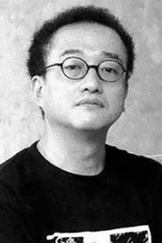
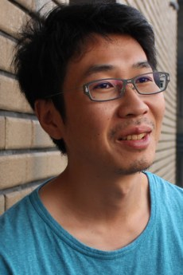
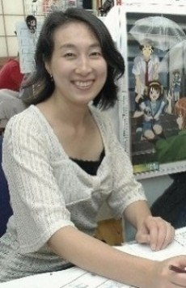
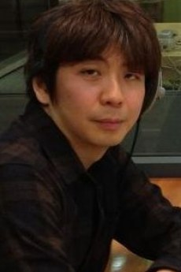

Director
石原立也Tatsuya Ishihara
代表作：《AIR》《凉宫春日的忧郁》《CLANNAD》《中二病也要谈恋爱！》《吹响吧！上低音号》
京都动画最资深的监督之一。擅长把大段说明性文本拆成有节奏的镜头，也愿意做形式实验—— 2006 年《凉宫春日的忧郁》的乱序播出，就是轻改动画史上最著名的一次冒险。 近年担任《最终乐章 吹响吧！上低音号》总监督。
Staff & Creators
京都动画的作品之所以能被一眼认出，是因为镜头后面有一群长期合作的人。 这里收录 8 位创作者：5 位监督、2 位作画与角色设计、1 位脚本家。 他们中的大多数人，是从作画现场一路做到监督的。
Line-up
石原立也与山田尚子代表了京都动画的两极：一个是把文本变成节奏的老练监督，一个是用身体与空气讲故事的作者。 武本康弘、石立太一、小川太一各自守着一条系列；池田晶子与西屋太志决定了角色长什么样；花田十辉决定他们说什么。

Director
代表作：《AIR》《凉宫春日的忧郁》《CLANNAD》《中二病也要谈恋爱！》《吹响吧！上低音号》
京都动画最资深的监督之一。擅长把大段说明性文本拆成有节奏的镜头，也愿意做形式实验—— 2006 年《凉宫春日的忧郁》的乱序播出，就是轻改动画史上最著名的一次冒险。 近年担任《最终乐章 吹响吧！上低音号》总监督。

Director
代表作：《轻音少女》《玉子市场》《声之形》《利兹与青鸟》
以低机位、脚部特写、留白与“空气感”著称。她让“什么都没发生”的时间成为主角， 也把京都动画的日常系带向电影化。近年执导《平家物语》《你的颜色》，持续以自由身活动。
Director
代表作：《凉宫春日的消失》《冰菓》《甘城光辉游乐园》《小林家的龙女仆》
擅长把谜题、喜剧与日常节奏缝在一起。《凉宫春日的消失》用两个多小时把 TV 的玩笑收束成一场告别； 《冰菓》则把“无聊的谜”拍得比事件更抓人。2019 年 7 月 18 日，他在第一工作室纵火事件中罹难。

Director / Animator
代表作：《境界的彼方》《紫罗兰永恒花园》《剧场版 紫罗兰永恒花园》
作画出身，画面控制极为精细。《境界的彼方》让他第一次独立执导 TV； 《紫罗兰永恒花园》里光线、玻璃与水的质感，几乎成了京都动画“工学”的名片。
Director
代表作：《最终乐章 吹响吧！上低音号》前篇 / 后篇
在京都动画的现场成长起来的新一代监督。2026 年的《最终乐章 吹响吧！上低音号》由他担任监督， 与总监督石原立也一起，为这段延续十年的故事收尾。

Character Design
代表作：《凉宫春日的忧郁》《CLANNAD》《吹响吧！上低音号》
京都动画角色设计的中坚，参与塑造了被观众称为“京都脸”的造型语言。 她为多部作品设计角色并长期担任总作画监督。2019 年 7 月 18 日，她在第一工作室纵火事件中罹难。
Character Design
代表作：《Free!》《声之形》《利兹与青鸟》《紫罗兰永恒花园》
线条干净、表情克制，擅长把少女的细微情绪留在静止的一帧里。 《Free!》的水、《声之形》的沉默、《利兹与青鸟》的呼吸，都经过他的手。 2019 年 7 月 18 日，他在第一工作室纵火事件中罹难。

Screenwriter
代表作：《中二病也要谈恋爱！》《冰菓》《境界的彼方》《吹响吧！上低音号》《最终乐章》
京都动画最重要的外部合作者之一。他擅长把原作的内心独白改写成可以拍的场景，让台词落在地面上。 从校园喜剧到吹奏乐群像，京都动画最重要的几部系列构成里都有他的名字。
人物照片来自公开网络资料（AniList 人物库），部分为活动或采访资料，拍摄年代与本人近照可能不同； 版权归原权利方所有，仅作课程展示。 简介与代表作根据京都动画官网、各作品官网及公开报道整理；生平信息以官方或家属公开内容为准。